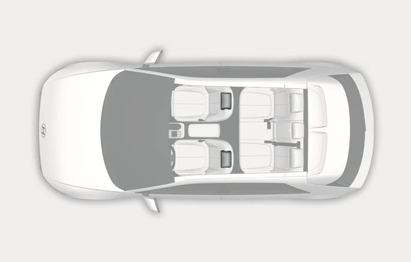
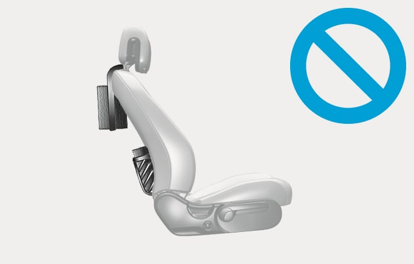
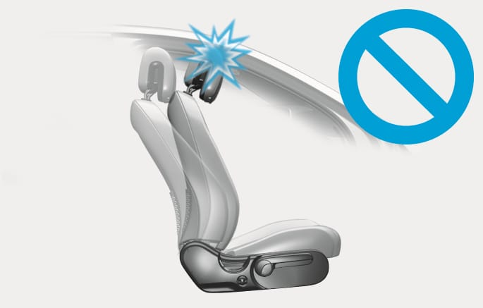
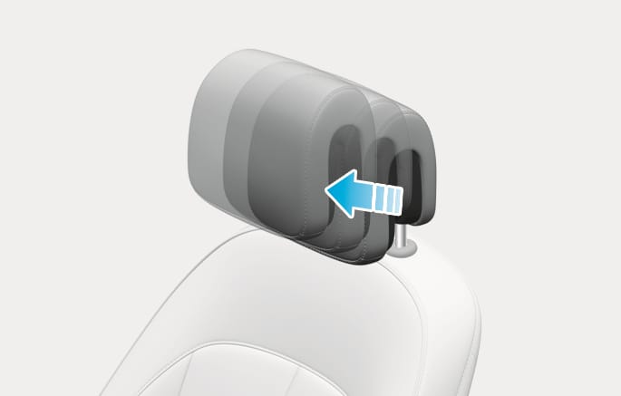
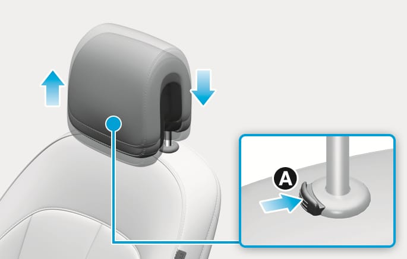
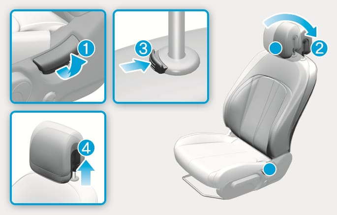
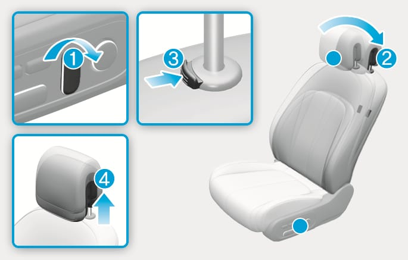
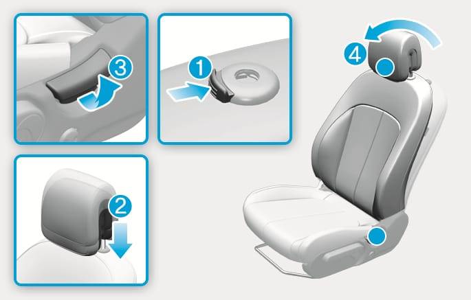
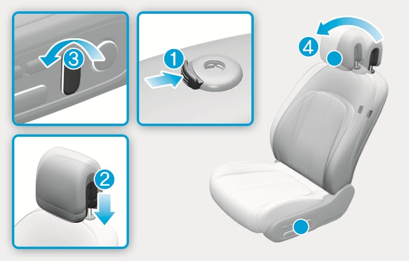

헤드레스트 조절하기

2C_HeadrestOverview
헤드레스트는 안락한 승차감을 제공하는 동시에 충돌 사고 시 머리와 목을 지지해 부상 방지를 돕습니다.
후방 충돌 시의 충격을 줄이려면 헤드레스트가 머리 뒷부분에 최대한 밀착되고 헤드레스트 중심부가 탑승자의 귀 뒤에 위치하도록 각도와 높이를 조절하십시오.
충돌 사고 발생 시 발생할 수 있는 심각한 부상을 방지하려면 다음 지시를 따르십시오.
-
헤드레스트를 제거한 상태로 주행하지 마십시오.
-
헤드레스트에 물건을 걸거나 액세서리를 설치하지 마십시오.

2C_HeadrestCaution
-
주행 중에는 헤드레스트를 조절하지 마십시오.
-
헤드레스트를 조절할 때 좌석과 헤드레스트 사이에 손가락이 끼지 않도록 주의하십시오.
-
헤드레스트를 조절하기 전에 등받이 각도를 적절히 조정해 헤드레스트를 움직이는 데 필요한 공간을 확보하십시오.
-
좌석을 앞으로 당긴 상태로 등받이를 앞으로 굽히면 선바이저 등 주변 부품이 헤드레스트와 충돌해 손상될 수 있습니다.

2C_AdjustHeadrestCaution

2C_AdjustHeadrestForwardBackward
-
헤드레스트 윗부분을 당겼다 놓으면 헤드레스트가 앞쪽으로 이동해 고정됩니다.
-
전방 최대 각도에 도달한 후 다시 한 번 당겼다 놓으면 헤드레스트가 후방 최대 각도로 복귀합니다.

2C_AdjustHeadrestUpDown
헤드레스트와 시트 사이의 잠금 해제 버튼(A)을 누른 상태로 헤드레스트를 위아래로 움직여 높이를 조절하십시오.

2C_RemoveHeadrestManual

2C_RemoveHeadrestAuto
-
등받이 각도 조절 레버 또는 스위치(1)로 좌석 등받이를 뒤로 젖히십시오(2).
-
헤드레스트를 끝까지 올린 후 잠금 해제 버튼(3)을 누른 상태에서 헤드레스트를 위로 올려 분리하십시오(4).

2C_InstallHeadrestManual

2C_InstallHeadrestAuto
-
등받이 각도 조절 레버 또는 스위치(3)를 사용해 좌석 등받이를 뒤로 젖히십시오.
-
헤드레스트 폴을 등받이 홈에 장착하십시오.
-
잠금 해제 버튼(1)을 누른 상태에서 헤드레스트를 내려 위치를 조절하십시오(2).
-
등받이 각도 조절 레버 또는 스위치(3)로 좌석 등받이를 바로 세우십시오(4).